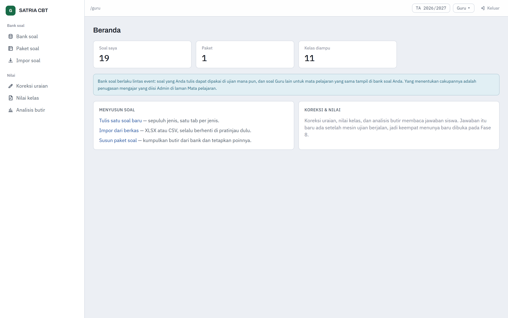

1. Masuk & beranda
Apa yang boleh Anda sentuh, dan cakupan mana yang berlaku.
Beranda Guru tidak menampilkan event, jadwal, atau peserta. Ia menjawab satu pertanyaan: apa yang sudah saya kerjakan? Tiga angka, dan tiga pintasan.

Tiga angka di atas
- Soal saya — berapa butir yang Anda tulis. Tidak menghitung soal Guru lain.
- Paket — berapa paket soal yang Anda susun.
- Kelas diampu — berapa penugasan mengajar yang menempel pada akun Anda.
Bank soal berlaku lintas event
Kotak biru di tengah beranda bukan hiasan; ia menjawab pertanyaan yang paling sering muncul: soal ini untuk ujian yang mana?
Jawabannya: tidak untuk yang mana pun secara khusus. Soal yang Anda tulis masuk ke bank soal sekolah dan bisa dipakai di ujian mana pun, termasuk oleh Guru lain yang mengampu mata pelajaran sama. Yang menentukan cakupan Anda adalah penugasan mengajar — bukan event, bukan kelas ujian.
Dua kelompok pintasan
Menyusun soal
Tiga tautan, sesuai urutan pekerjaan: menulis satu soal, mengimpor banyak sekaligus, atau menyusun paket dari yang sudah ada.
Koreksi & nilai
Koreksi uraian, nilai kelas, dan analisis butir membaca jawaban siswa — dan jawaban baru ada setelah mesin ujian berjalan. Ketiganya akan kosong sampai ujian yang memakai paket Anda benar-benar dikerjakan. Itu wajar, bukan tanda ada yang rusak.